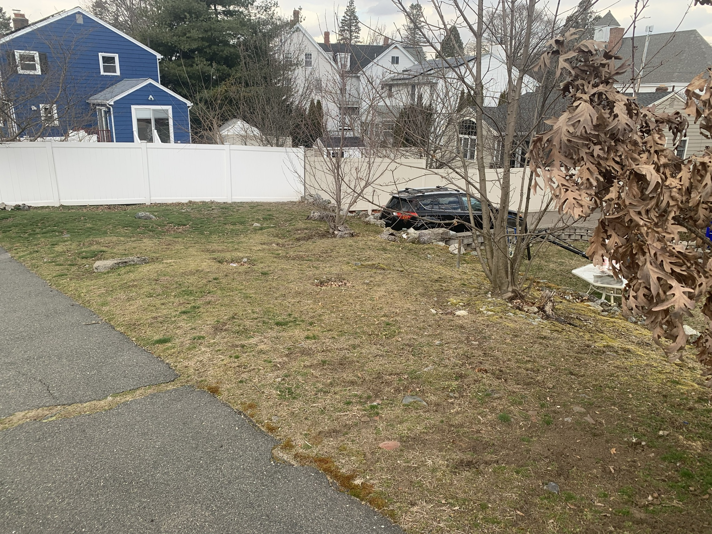
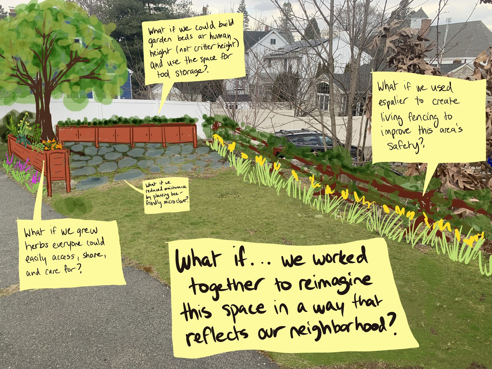

Our Impact
A small strip of forgotten city-owned land is now Malden’s first pocket forest — a living example of what neighbors can accomplish together. Here’s what that transformation looks like.
Before & After


Climate Action Initiative
In a significant step aligning with Malden’s climate action plan, the first of our pocket forests has taken root on Goodwin Avenue. This initiative has transformed a previously unmaintained area by reintroducing several native tree species such as Oak and Spruce, replacing impervious surfaces, and installing porous pavement.
These changes enhance biodiversity, improve stormwater management, and create a small but vital green space within our community.
About FlexiPave
FlexiPave is a porous, rubberized paving material made largely from recycled tires. Unlike traditional concrete or asphalt, it allows rainwater to pass directly through the surface and into the soil below — reducing runoff, replenishing groundwater, and preventing puddles. Because it flexes rather than cracks, it requires far less maintenance than conventional pavement over time.
FlexiPave also stays cooler than blacktop in summer heat, contributing to the reduction of the urban heat island effect. It’s slip-resistant, ADA-accessible, and keeps the soil beneath it aerated so tree roots can thrive — making it an ideal pairing with a pocket forest planting.

Environmental Impact
pocket forest in Massachusetts funded by an Environmental & Energy Affairs grant from the DCR
Native plantings
Native Oak, Spruce, and other species replace turf grass, supporting local pollinators including bees, butterflies, and birds that depend on native plant communities.
Stormwater management
Porous FlexiPave pavement and native plant root systems allow rainwater to percolate into the ground, reducing runoff into storm drains and easing pressure on city infrastructure.
Carbon sequestration
The newly planted trees will sequester carbon over their lifetimes, contributing to Malden’s long-term climate goals.
Reduced emissions
The site previously required regular gas-powered mowing to manage pests. The pocket forest replaces that ongoing maintenance burden with a self-sustaining native ecosystem.
Urban heat island
Tree canopy and plant transpiration cool the surrounding area, helping to reduce the urban heat island effect in a densely developed neighborhood.
Community Impact
Neighbor-led from day one
The project was initiated by a resident and designed through multiple open community meetings, giving neighbors direct input on what the space would become.
Volunteer-built
Residents from Forest Street, Goodwin Avenue, and surrounding areas showed up for cleanups, planning sessions, and planting days to bring this project to life together.
A model for the city
The Forestdale Pocket Forest demonstrates how citizen-initiated projects, supported by city resources and grants, can transform underused public land into lasting community assets.
Educational resource
The space serves as a living classroom for native plant ecology, sustainable gardening, and low-maintenance green infrastructure that neighbors can explore year-round.
Beautification
An overlooked, debris-collecting strip of land is now a welcoming green destination that enhances the character and pride of the surrounding streets.
Biodiversity in the city
By introducing native trees and understory plants, the pocket forest creates a habitat corridor in an otherwise paved urban environment, benefiting wildlife well beyond the site itself.
Recognition
- Attended and celebrated by Mayor Gary Christenson, State Representative Kate Lipper Garabedian, and Ward 5 Councillor Ari Taylor at the official opening on October 23, 2025.
- Featured in the City of Malden’s Climate Action Initiative as a flagship pocket forest project.
- Covered by Neighborhood View, the Advocate, and local social media.